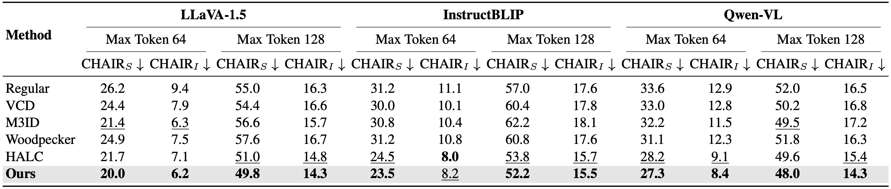
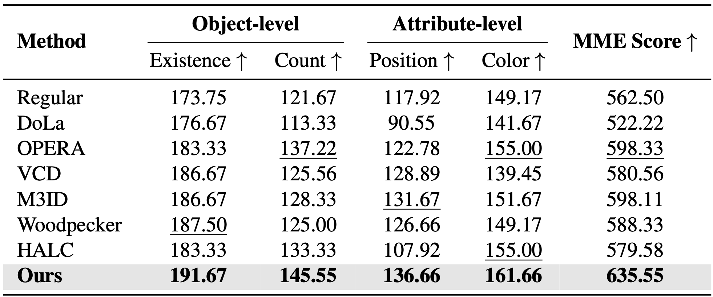
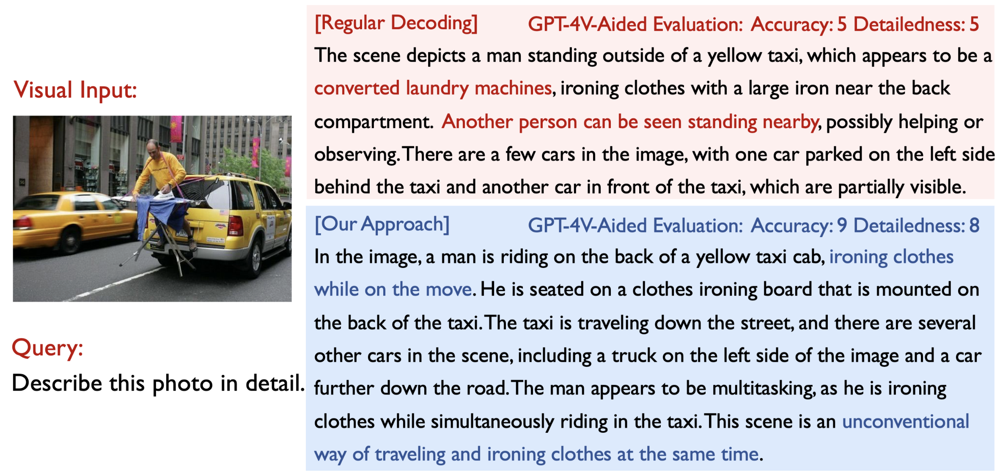

$^{*}$Equal contribution School of Computer Science, Carnegie Mellon University ICCV 2025
PaperarXivCode Figure 1. Comparisons of accuracy and speed of multiple hallucination mitigation methods.
The size of bubbles stands for the GPU memory consumption. Our method mitigates hallucination with only 0.07$\times$ extra time. Figure 2. Overview of our proposed ONLY.
Our method retains the core decoding process of LVLMs but incorporates a textual-enhanced multi-head attention layer with a residual connection to the last layer's output. This adjustment aims to produce an output with a greater focus on textual information. The resulting textual-enhanced logits are then adaptively decoded alongside the original output, employing either contrastive or collaborative decoding strategies to optimize performance.
Highlights
We investigate and challenge the performance-efficiency trade-off of existing contrastive decoding approaches for mitigating hallucinations in LVLMs, highlighting the efficiency issues.
We present ONLY, a novel training-free decoding algorithm that leverages a single additional Transformer layer to improve the accuracy of LVLM responses.
We conduct comprehensive experiments across various benchmarks and demonstrate that our proposed ONLY consistently outperforms existing approaches with minimal implementation effort and computational cost.
Abstract
Recent Large Vision-Language Models (LVLMs) have introduced a new paradigm for understanding and reasoning about image input through textual responses. Although they have achieved remarkable performance across a range of multi-modal tasks, they face the persistent challenge of hallucination, which introduces practical weaknesses and raises concerns about their reliable deployment in real-world applications. Existing work has explored contrastive decoding approaches to mitigate this issue, where the output of the original LVLM is compared and contrasted with that of a perturbed version. However, these methods require two or more queries that slow down LVLM response generation, making them less suitable for real-time applications. To overcome this limitation, we propose ONLY, a training-free decoding approach that requires only a single query and a one-layer intervention during decoding, enabling efficient real-time deployment. Specifically, we enhance textual outputs by selectively amplifying crucial textual information using a text-to-visual entropy ratio for each token. Extensive experimental results demonstrate that our ONLY approach consistently outperforms state-of-the-art methods across various benchmarks while requiring minimal implementation effort and computational cost.
Experimental Results
Results on POPE
Table 1. Results on POPE benchmark
Higher ($\uparrow$) accuracy, precision, recall, and F1 indicate better performance. The best results are bolded, and the second-best are underlined.
Results on CHAIR

Table 2. Results on CHAIR benchmark. We limit the maximum number of new tokens to 64 or 128. Lower ($\downarrow$) CHAIR$_S$ and CHAIR$_I$ indicate better performance. The best results in each setting are bolded, and the second-best are underlined.
Results on MME

Table 3. Results on MME-Hallucination and MMBench benchmark.
We report the average MME scores along with the standard deviation across three random seeds for each subset. Higher scores ($\uparrow$) indicate better performance. The best results are bolded, and the second-best are underlined.
Case Study on LLaVA-Bench

Figure 3. Case study on the LLaVA-Bench benchmark.
We compare the responses generated by regular decoding and our method using LLaVA-1.5. GPT-4V-aided evaluation results are also provided alongside the responses. Hallucinated and accurate content is highlighted in red} and green.